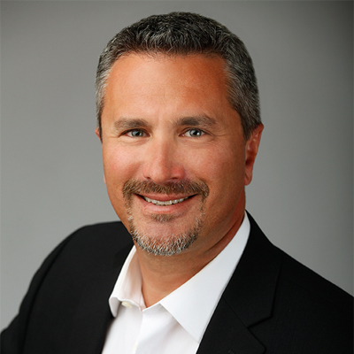
Founder & CEO
Phil Pizzino
NMLS #79337
Throughout his career, Phil Pizzino has focused on creating a business where customers and employees can thrive.
Connect directly with an experienced mortgage professional or a member of our support team.

Founder & CEO
NMLS #79337
Throughout his career, Phil Pizzino has focused on creating a business where customers and employees can thrive.
Choose a person to view their published biography, licensing details, direct contact information, and individual secure links.
66 team members
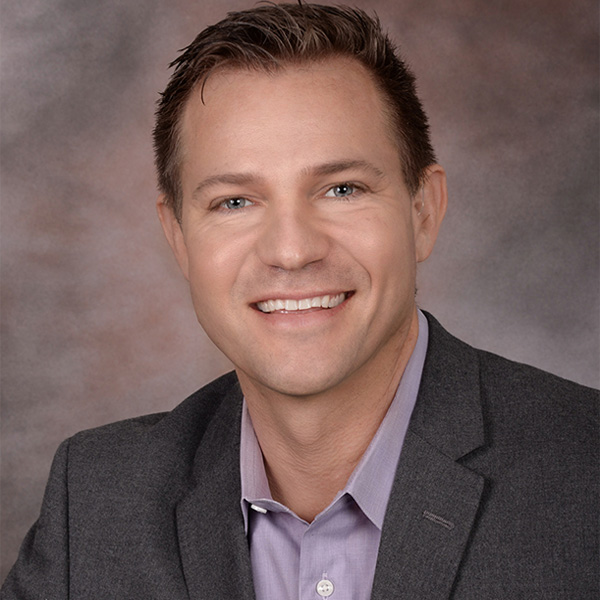
Sales Manager / Residential Mortgage Loan Originator
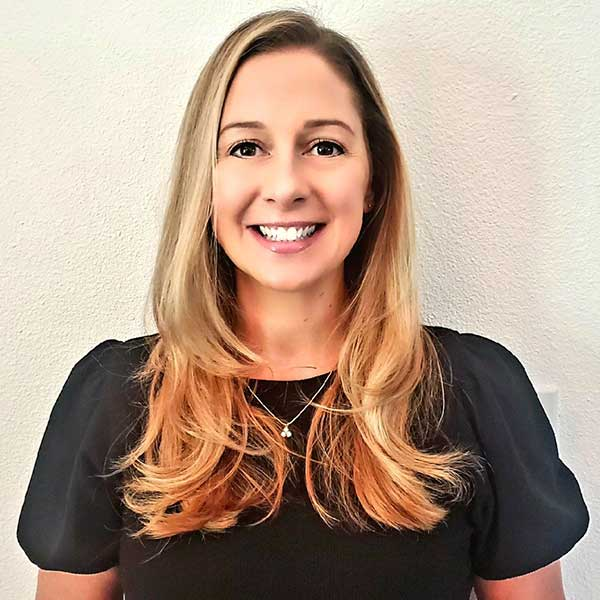

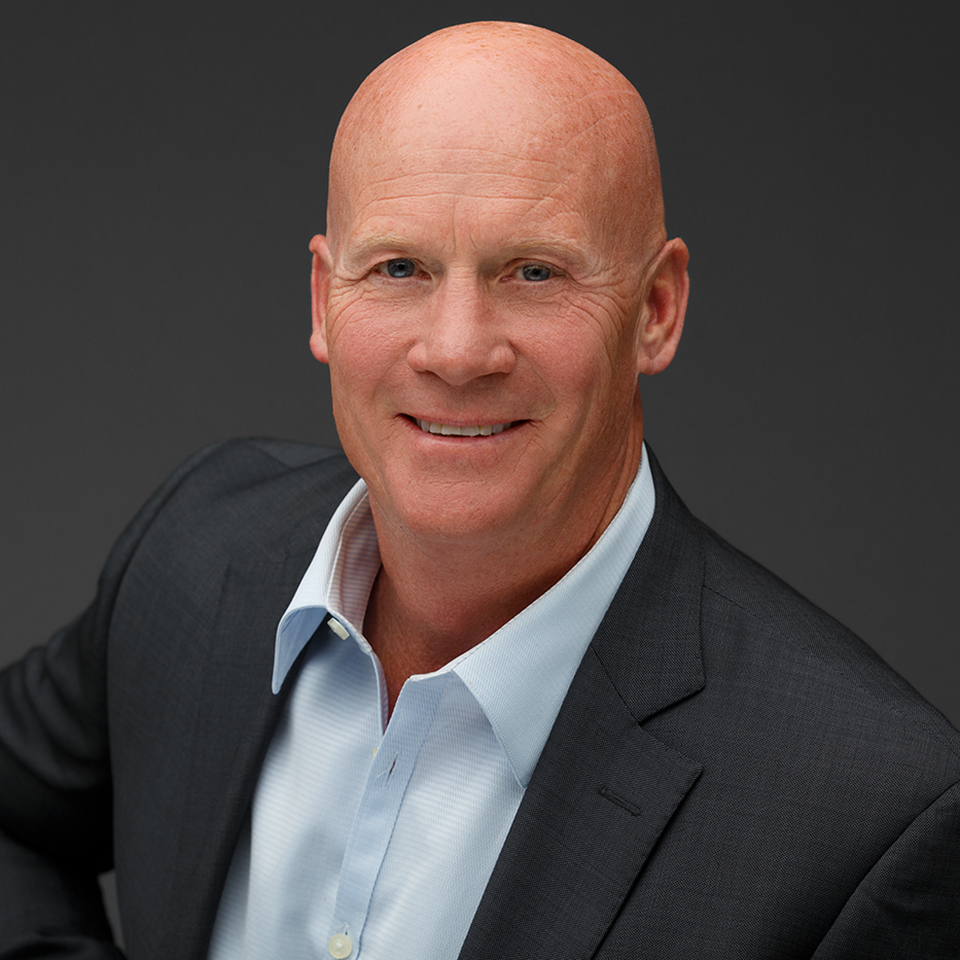
Residential Mortgage Loan Originator / VA Specialist

Broker/Co-Founder - Seaside Executives Residential Mortgage Loan Originator
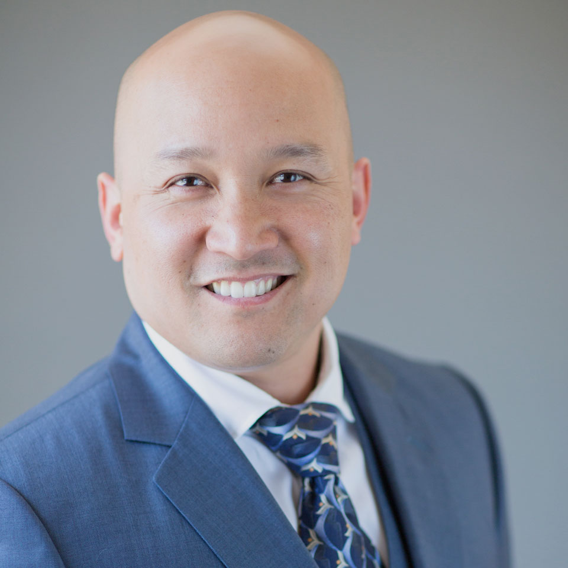
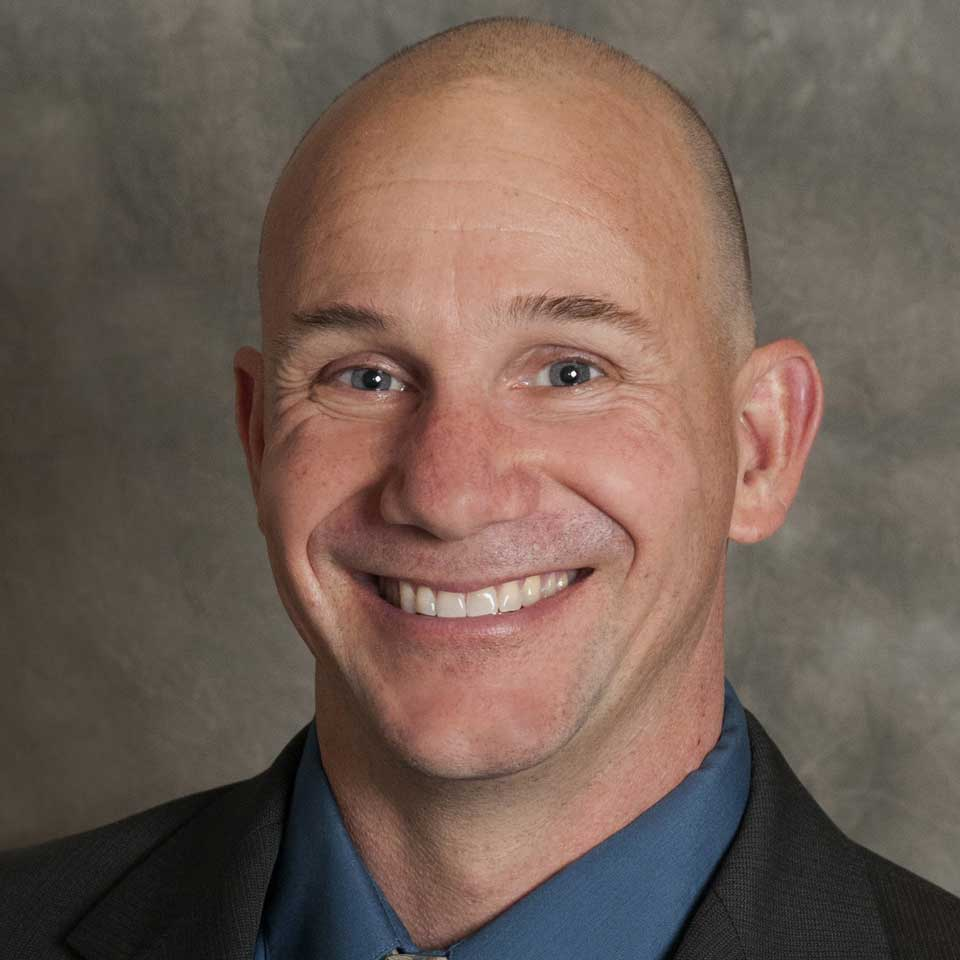
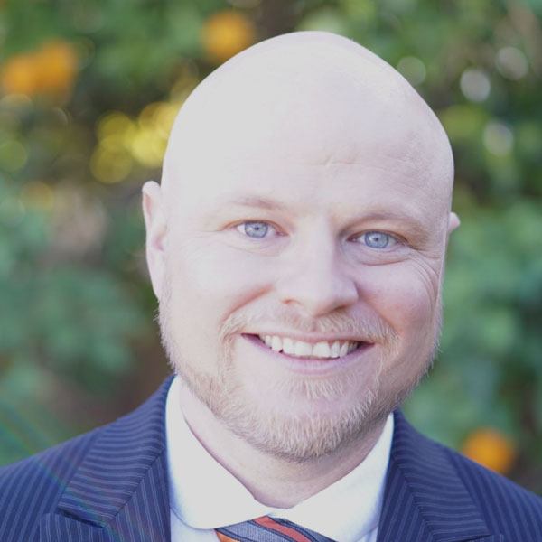
Sales Manager / Residential Mortgage Loan Originator
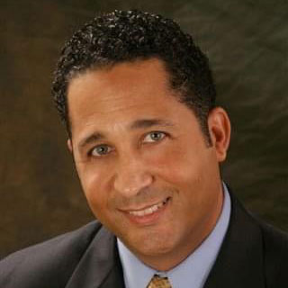


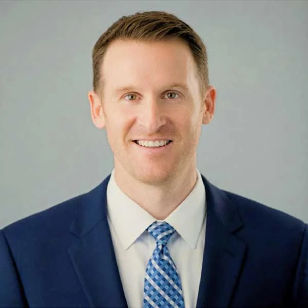
Branch Manager / Residential Mortgage Loan Originator
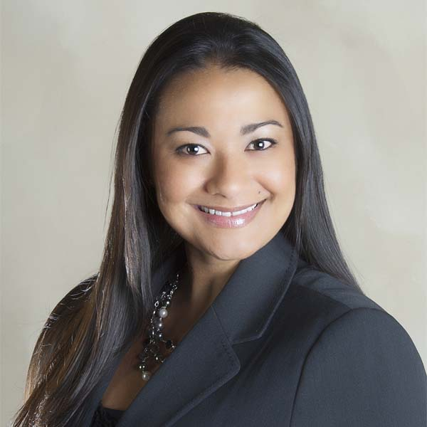
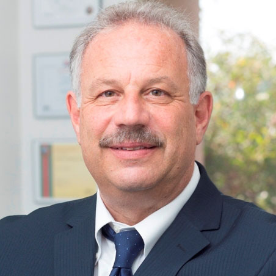
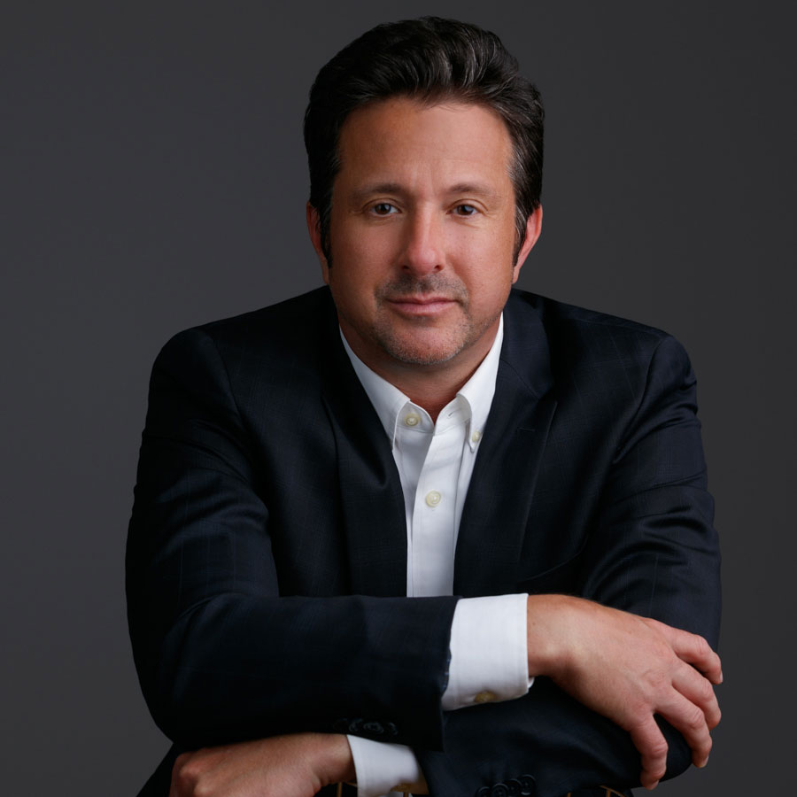
Loan Processor / Residential Mortgage Loan Originator

SB Manager Arizona Mortgage Broker MB-0915582

Senior VP of Talent Acquisition MLO Team Leader

Realtor / Residential Mortgage Loan Originator
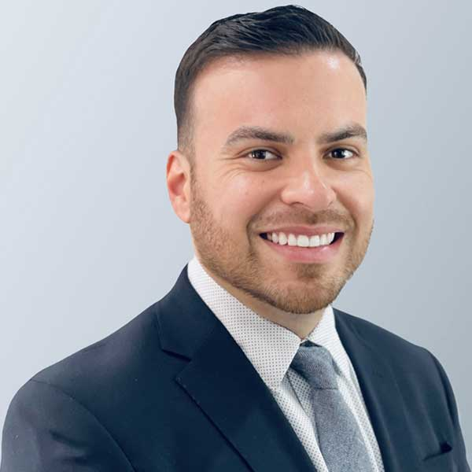
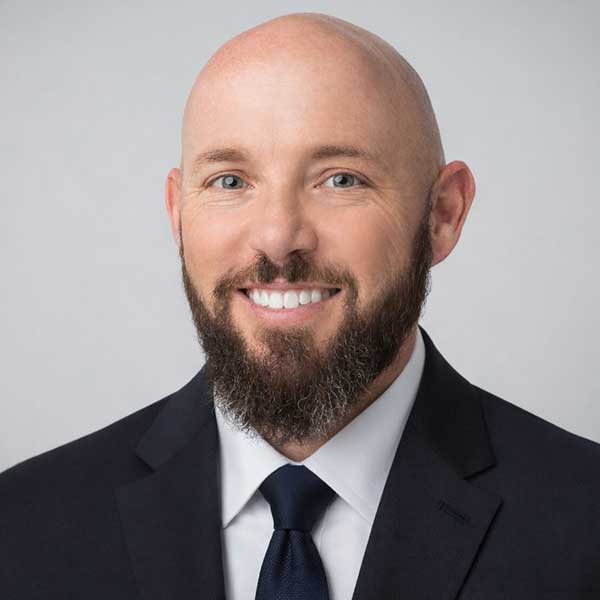
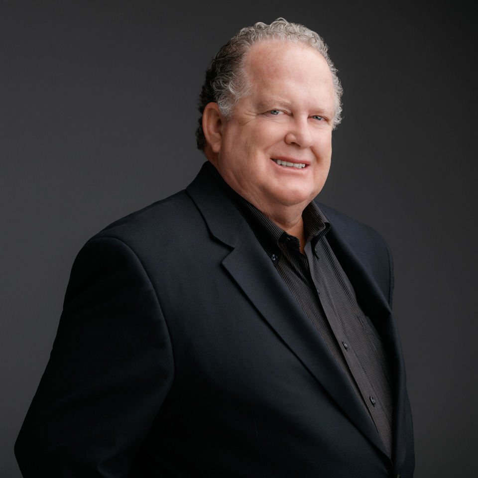

Residential Mortgage Loan Originator / Certified Veterans Lending Specialist
Residential Mortgage Loan Originator
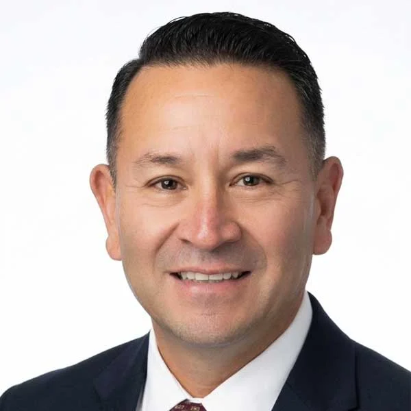
No team members match that search.